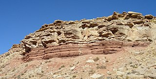

Sedimentary rocks are types of rock that are formed by the accumulation or deposition of mineral or organic particles at Earth's surface, followed by cementation. Sedimentation is the collective name for processes that cause these particles to settle in place.
